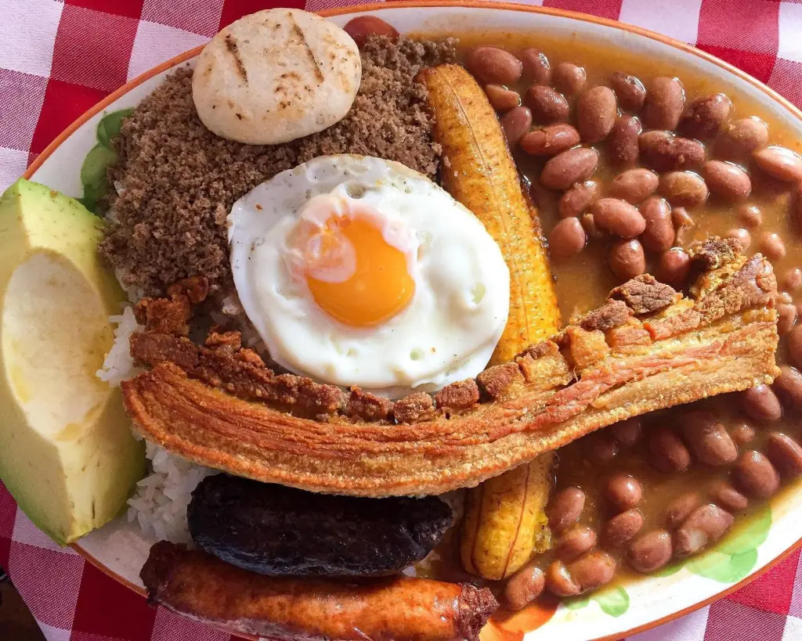

PLATO COMBINADO POR EXCELENCIA
La bandeja paisa es el plato combinado por excelencia de Colombia, insignia de la gastronomía antioqueña. Está compuesto por diez alimentos o preparaciones diferentes: arroz, carne picada, alubias cocidas, plátano frito, aguacate, huevo frito, sofrito de cebolla y tomate, panceta y chorizo.
INGREDIENTES
- Arroz blanco
- Frijoles cocidos
- Carne molida
- Arepa blanca
- Aguacate
- Chicharrón
- Chorizo
- Platano maduro
- Huevo frito
- Rellena
Preparacion de Frijoles
- 2 tazas de frijoles
- 4 tazas de agua
- 1 taza de zanahoria rallada
- 1/2 plátano verde
- 1/2 cucharada de sal
Preparacion de Hogao
- 1 cebolla larga
- 2 tomates frescos
- 1 diente de ajo
- 3 cucharadas de aceite
- 1 pisca de sal
- 1 pisca de pimienta molida
Preparacion de Arepa
- 1/2 cucharada de sal
- >4 tazas de agua tibia
- 140 gr de arina
- 1 cucharada de aceite
INSTRUCCIONES DE PREPARACIÓN
Dificultad: Fácil
- Comenzaremos la preparación poniendo a cocer los frijoles o alubias junto con su agua de remojo. Además, echaremos a la olla un trozo de cebolla (reservamos el resto para más adelante), 1 o 2 hojas de laurel, unas ramas de tomillo y un par de ajos enteros pero ligeramente machacados.
- Ponemos los frijoles a fuego fuerte y, cuando el agua hierva, los dejamos cocinar 10 minutos. Luego, bajamos el fuego y los tenemos entre 1 hora y media, y 2 horas, dependiendo de la variedad, hasta que estén tiernos. Si lo deseas, el tiempo de cocción puede reducirse a la mitad si usas la olla exprés.
- El siguiente paso es preparar los chicharrones. Para ello, vamos a cortar 200 g de panceta fresca en dos trozos y, luego, a cada trozo le haremos un corte longitudinal y dos o tres transversales pero sin llegar a la piel, de forma que la carne se quede unida como ves en la foto. Por último, salpimentamos y espolvoreamos generosamente la piel con bicarbonato sódico para que lo ablande y tenga una textura más agradable al comerla. Dejamos reposar una media hora para que haga efecto.
- En una sartén, ponemos a calentar aceite para freír. Debe quedar bien caliente, pero como siempre, debemos evitar que humee. Cuando esté a temperatura, doramos los dos trozos de panceta y volvemos a ponerlos sobre papel absorbente para eliminar el excedente de aceite.
- Seguimos con una guarnición bastante rica. Para ello, pelamos medio plátano macho que deberá estar maduro (el verde no nos sirve, ese es para tostones). Lo cortamos en 4 rodajas a lo largo, lo freímos hasta que se dore al gusto y dejamos reposar sobre papel absorbente. Salpimentamos ligeramente.
- Pues ya está casi. Nos queda un componente más: el aguacate. Basta con pelar y cortar ½ aguacate en cuartos o rodajas. Para servir, ponemos todo junto en una bandeja con el hogao en un cuenquito aparte, para añadirlo al gusto.
OTRAS RECETAS